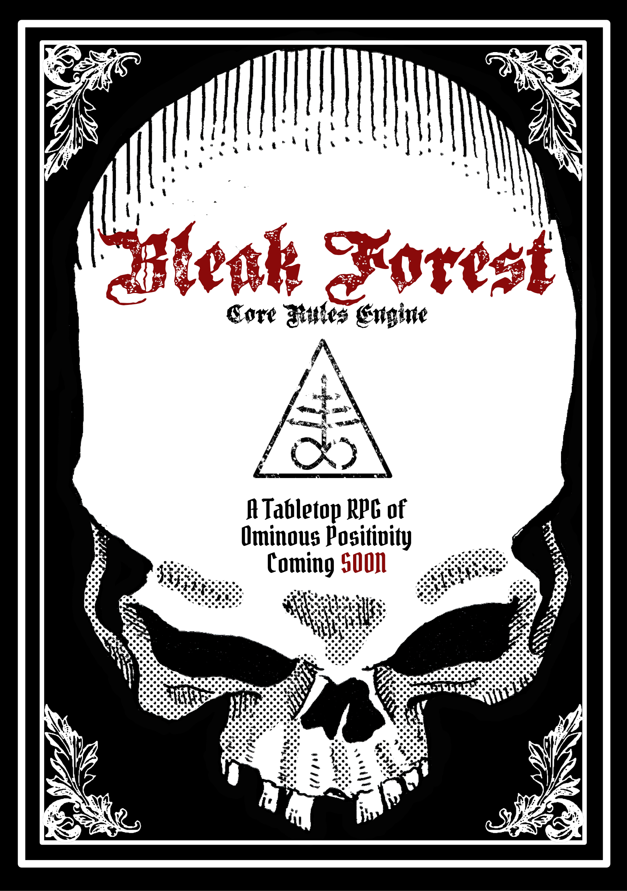

Bleak Forest
Tabletop RPG System
Created by Johnathan L Bingham

The Forest is infected and its rot is spreading. You will stop it. There is no other option. In a bleak world where your trials are carved in pain, darkness, and blood, the cycle must be completed for the world to be reborn. The path is brutal and your place in its rebirth is yours to define. Will you achieve greatness, or will you fall short of glory before you are remade?
The Bleak Forest is a tabletop roleplaying game system set in a grim world of dark fantasy. You are navigating an environment beset by challenges at every turn. Yeah, you’ve heard it all before – a dark scourge and a grim world where peril awaits around every corner in a doom-haunted world. Where life is short and you must manage resources and master your abilities to stave off the pain and misery around you. While that certainly is an element in this game (and a big part of the flavour), there is something more on offer here. The Bleak Forest game system is a game of ominous positivity: Your world is failing and you will see it complete its cycle – there simply is no other choice. As the world falls into darkness, disease, and despair, it will eventually be reborn. Your part in that rebirth is inescapable, but the hell you must endure to arrive at the other side is defined by your actions. Inspired by mythic cycles of calamity and rebirth such as the Norse tales of Ragnarok and Fimbulvetr and the Hindu and Buddhist cosmic cycle of Samsara; Beyond the Bleak Forest is set at the last stages of the cycle before rebirth. You are part of that cosmic cycle, though powerful forces work against you, preventing the conclusion of the cycle, drawing out the anguish of a world in transition.
The basic game engine mechanic is simple: roll over a target number, apply modifiers, and determine result. Pretty standard stuff. However, one of the driving mechanical design goals is to create a game that lends itself to different modes of play: Co-Op, GM-led, and Solo. To do that, it needed to be simple enough that there would not be endless lookups and modifier balancing, all the while providing structure and direction necessary for guided play through solo or Co-Op modes, yet be flexible enough to provide free-form GM-guided play and still feel satisfying.
The core rules comprise a common set of mechanics across Bleak Forest Engine Games. This includes:
- Character creation
- Core Mechanics
- Skills, abilities, and magic
- Basics of gameplay
The core rules engine provides the mechanics common across the Bleak Forest system and gives you a solid foundation for building your own settings and adventures (and even games) on top of them. Some elements—such as character advancement, skills, and magic can and will vary between different Bleak Forest implementations, so the core rules provide simple modular options you can adapt to suit your needs. Below are some of the modular games built upon the core rules engine:
- Escape the Bleak Forest is a solo character funnel that gamifies character creation. Through cycles of death and return, your character is refined until their true nature emerges and they finally escape the Forest.
- Beyond the Bleak Forest lies a dying world, haunted and collapsing toward its inevitable renewal. The Abrikoth (six Avatars of Corruption) fight to stop that rebirth and preserve their dominion over the damned. As you carry your character forward from Escape the Bleak Forest, your abilities sharpen, and your fate takes shape. This chapter can be played solo, cooperatively, or with a GM guiding the descent and rebirth.
And with that, welcome to the core rules for the Bleak Forest TTRPG Game Engine. It’s a living document, so things may shift as the design grows. Have fun and happy gaming!
The Core Mechanic
Whenever a player attempts an action with a risk of failure, they roll a 20-sided die (d20) and add their relevant attribute modifier. If the final total equals or exceeds the Difficulty Class (DC), called a Basic Activity Modifier (or BAM!), the action succeeds.
| BAM! | Easy | Average | Difficult | Challenging | Formidable | Inconcievable |
|---|---|---|---|---|---|---|
| Target Score | 10 | 13 | 16 | 19 | 22 | 25 |
Character Attributes
Characters are tracked using three primary attributes that quantify their physical and mental prowess.
| Attribute | Description | Common Check |
|---|---|---|
| Corpus | Corpus represents your physical body. | It affects how well you can lift things, climb, dodge, and how well you endure hardship. |
| Anima | Anima represents your mind. | It reflects your emotions, determination, and how you interact with others. Anima helps with tasks like convincing people, spotting danger, or noticing hidden things. |
| Spiritus | Spiritus represents your inner spirit or essence. | It’s important for things like casting spells, empowering sigils, and making deals with magical beings. |
Character attributes follow a standard range from 3-18 for human characters, with 18 representing the highest human potential. Attribute descriptors such as Mediocre or Excellent can be useful in describing the quantification of the particular attribute, but they are not necessary for gameplay.
Attribute values above 18 apply only to non-player creatures, environments, and Challenges. They represent superhuman, environmental, or mythic forces such as monsters, ancient spirits, cursed locations, or existential ordeals. These values are used only to determine Might.
| Roll (3d6) | Modifier | Description | Might |
|---|---|---|---|
| 1-2 | -4 | Awful | n/a |
| 3-4 | -3 | Terrible | n/a |
| 5-6 | -2 | Poor | n/a |
| 7-8 | -1 | Mediocre | n/a |
| 9-11 | 0 | Average | n/a |
| 12-13 | +1 |